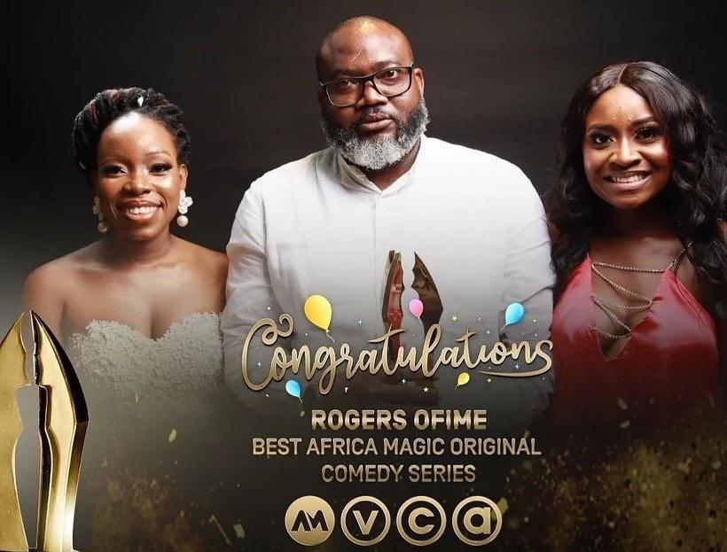
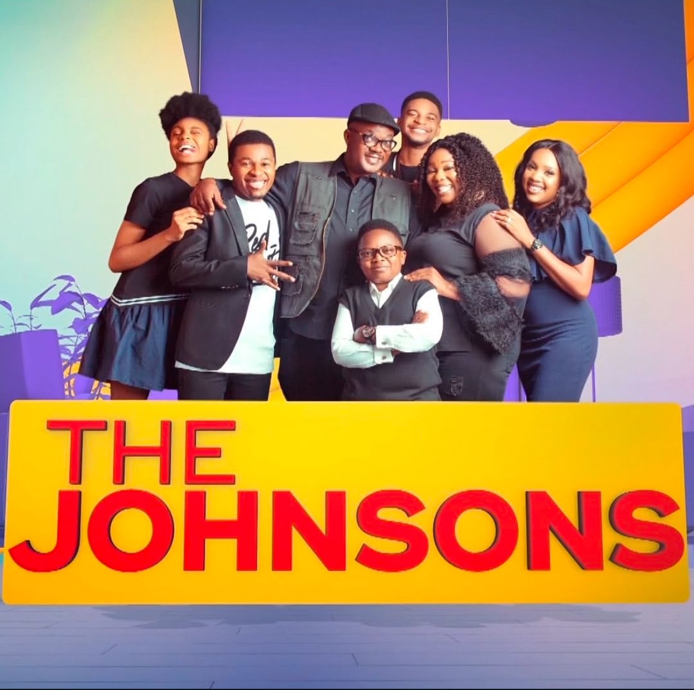
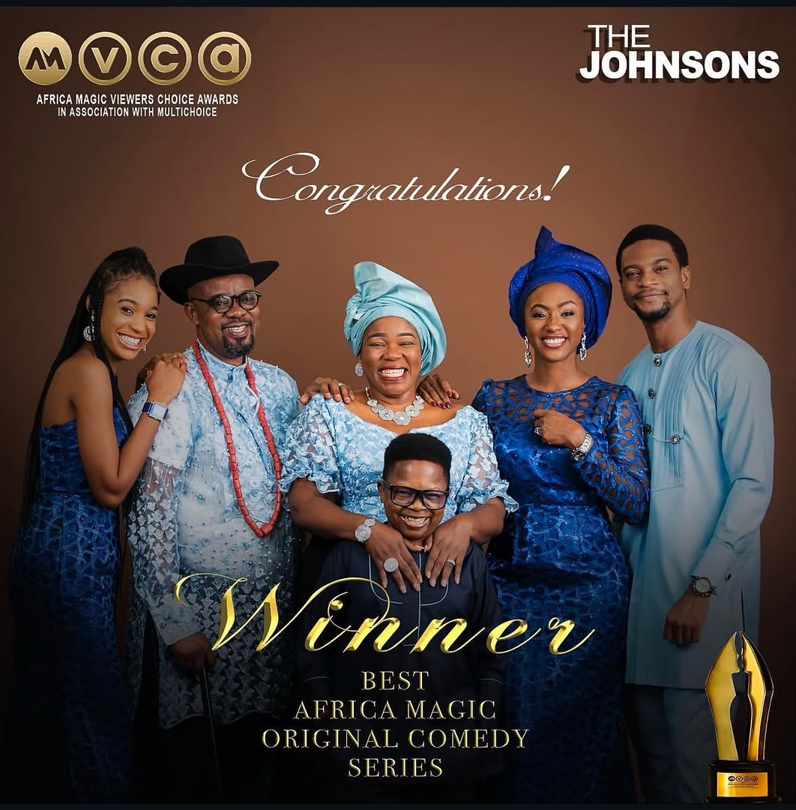
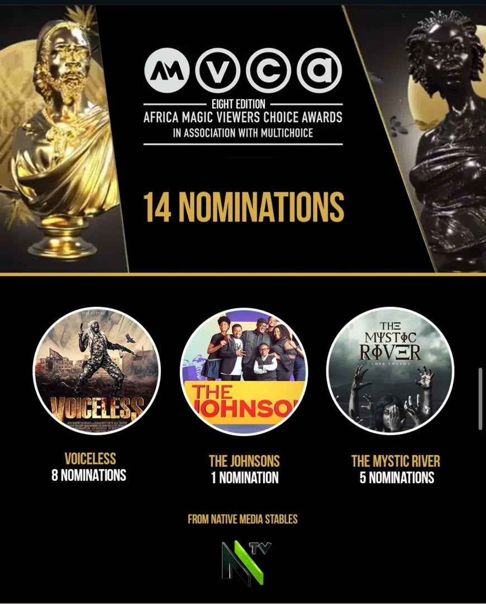
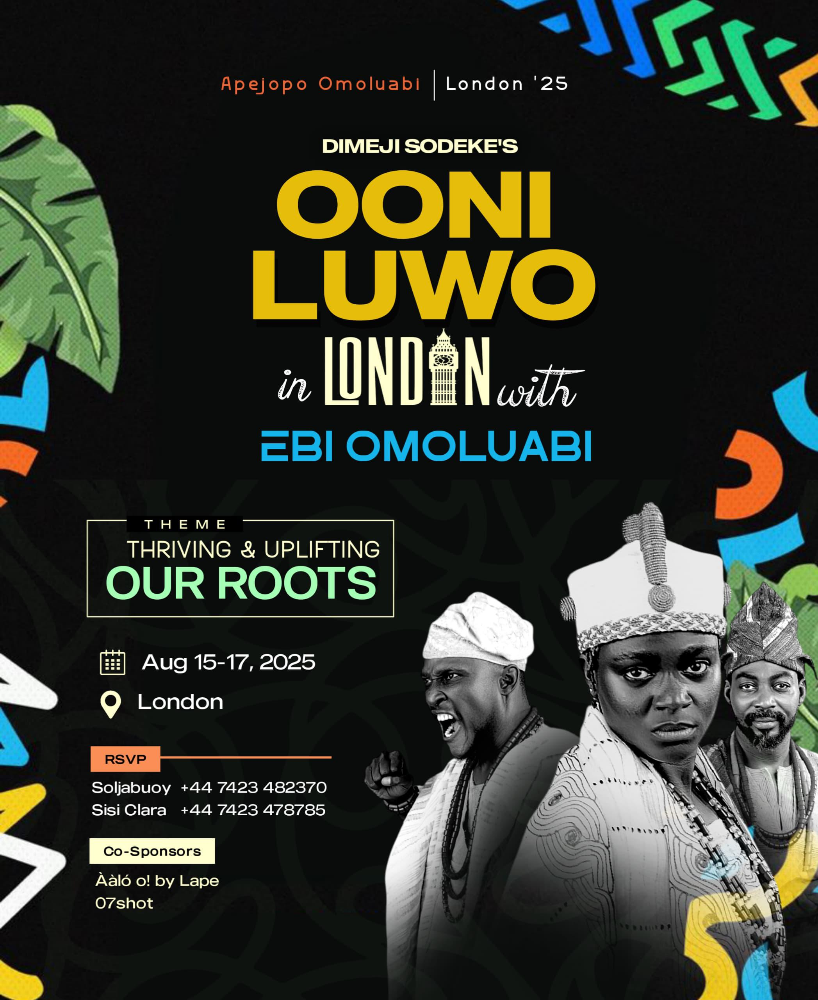
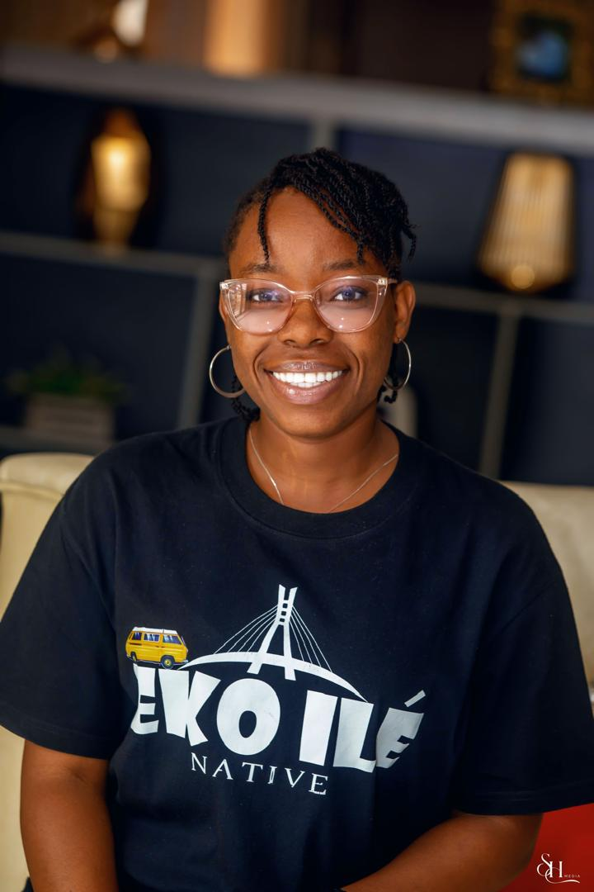

Gallery
On set & in frame






Lagos, Nigeria
Producer and Film Production Manager with 10+ years of keeping Nigerian film and television productions on time and in budget, and as a producer bringing documentaries and stage plays of her own into life.

About
Victoria has over 10 years of experience as a production manager in the Nigerian entertainment industry managing the day-to-day production of long-running series, feature films, documentaries and stage productions.
She's produced or managed more than 20 projects, including Netflix and Mnet series, and international documentaries. She has cultivated a reputation for finishing on time and on budget, while trimming costs and honing efficiency wherever she works.
Her expertise includes, but is not limited to, pre-production planning, project development, production scheduling, budget development and cost control, vendor negotiations, script breakdowns and vetting, crew leadership, location management, call-sheet preparation and post-production coordination, complemented by a strong instinct for social media and audience engagement. She has independently produced projects from inception to completion, including the documentary Owode Yewa Town and the stage play Ooni Luwo. Her years of community and welfare work outside the industry inform how she runs a set: calmly and with people first.
She has developed her production career in two of Lagos’s leading production houses; Singing Tree Films, owned by Remi Vaughan-Richards and Native Media Limited, owned by Rogers Ofime. She now runs her own venture, Vuzey Empire Ltd, a registered arts and media company. She is also a certified care nurse with more than 10 years of experience and a recently qualified phlebotomist, she offers that same hands-on care on set, stepping in with medical support wherever cast and crew need it.
Selected Work
Gallery





Recognition
Experience
Film Production Manager / Archiver
Wura (Season 4 & 5) · Native Media
Film Production Manager
The Johnsons · Native Media
Production Coordinator & Social Media Manager
The Johnsons · Native Media
Production Secretary
Singing Tree Films
Production Welfare & Medicals Coordinator
Singing Tree Films
Production Assistant
Singing Tree Films
Expertise
Community
Social Worker · 2017–Present
Caregiver · 2017–Present
Education
Certifications — Project Planning & Management (Alison, 2024) · Understanding & Preventing Sexual Harassment (Alison, 2024) · Working with Students with Special Educational Needs (Alison, 2023)